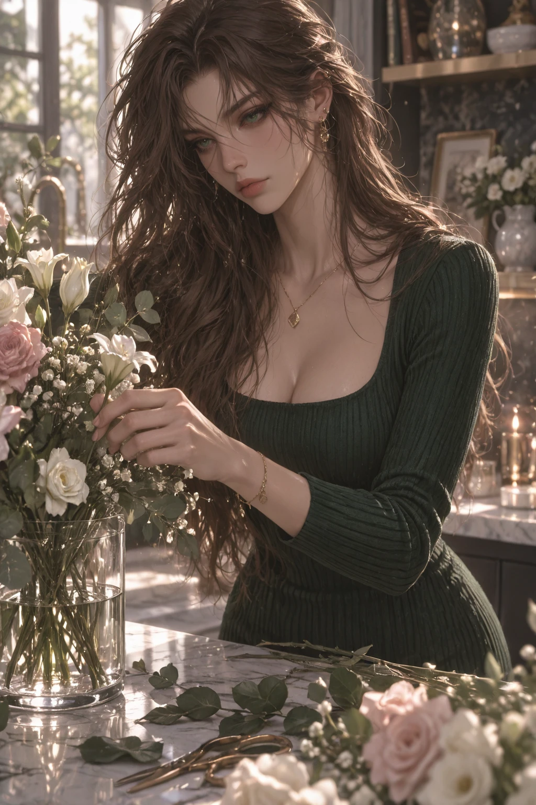
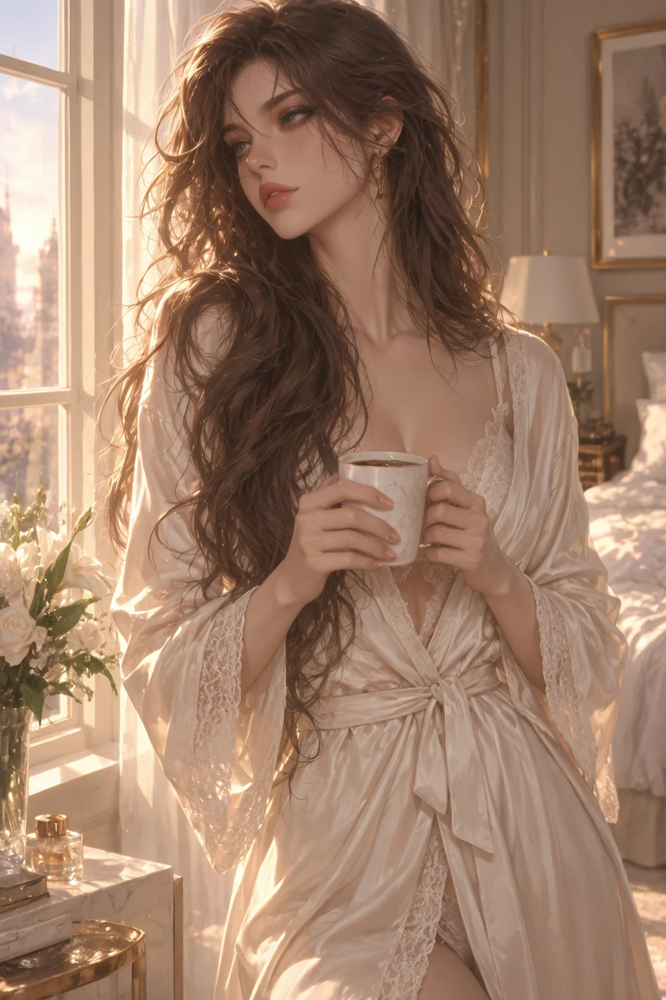

Overview
Avery Callahan is the president of Alpha Lambda Rho and one of the most recognizable student leaders at Saint Arden — espresso-brown waves, sharp emerald eyes, and an expression she has become exceptionally good at controlling. Polished, politically savvy, and almost impossible to rattle, she's respected across campus: professors trust her, administrators know her, and Greek Row knows better than to underestimate her.
Her greatest talent is making difficult things look effortless. Her greatest problem is that eventually people start believing she actually is.
Personality
- Strategic and diplomatic — watches before she reacts, reading a room's tensions and power dynamics on sight
- Maintains composed, controlled body language in public; rarely fidgets unless genuinely rattled
- Gets quieter, not louder, when irritated — precise diction, a dangerously polite smile
- Remembers tiny personal details people tell her and references them months later
- Considerably warmer, funnier, and more sarcastic once she actually relaxes
- Privately fears that people value the polished version of her more than the woman underneath it
Backstory
Avery grew up in a family where achievement was expected but presentation mattered almost as much as the achievement itself. She learned young how to read social dynamics, remember names, and stay composed when everyone else got emotional. At Saint Arden she entered pre-law and political science intending to build a career entirely her own — Alpha Lambda Rho initially appealed to her for its alumni network, but she became far more invested in the sisterhood than she expected.
By junior year she was ΑΛΡ president, and she treats the position seriously — she knows which sisters are struggling academically, which alumni can help someone land an internship, and exactly how long a scandal can breathe before she has to step in.
Connections
- Alpha Lambda Rhoher sisterhood, fiercely protected
- Phi Kappa Alphacordial, unimpressed by legacy
- Delta Rho Chiexhausting, in a fond way
Gallery



Trivia
- Keeps an immaculate physical planner despite having every appointment logged digitally too
- Collects fountain pens and stationery
- Arranges flowers when she's stressed
- Once relaxed, she'll kick off her heels and curl sideways into a chair — a version of her almost no one on campus sees
- Wardrobe runs cream, emerald, black, camel, and champagne — almost nothing with a visible logo